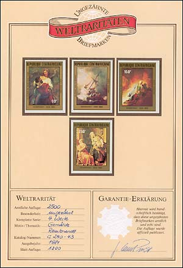

|
|
Undesirable and Excessive Stamps
In the last time several actions were taken by the WADP and some collaborating organizations (PWO being one of them, on the Internet) against those who produce or sell the so called Illegal Stamps.
A much bigger problem represent the many stamps that were legally produced for different countries, but under doubtful conditions. This is an area where at time nobody is doing something concrete.
For this reason PWO, that was the first organization on the Web to start a fight against the illegals, starts this time an educational campaign for the topical stamp collectors, against what it calls THE UNDESIRABLE AND EXCESSIVE STAMPS.
By undesirable stamps we understand those produced under doubtful circumstances, without the control of the countries (in the name of which they were issued) over their quantities and different varieties (imperfs, sheets, etc). Please note that we don't speak here about one or two sets, produces let's say in the interval of a decade in a country, by some private firms, and where the experts cannot agree if there were used for postal purposes, or if the were produced with the approval of the respective postal administration. We speak about stamps that were produced with the approval of PAs of poor countries, in big quantities, in order to be sold to stamp collectors worldwide without any control.
The excessive stamps are some issued issued in quantities that exceed by large margins the postal necessities of those countries. An example is Liberia (a country in war), that issued in the year 2000 a total of 771 different pieces, comprises 677 stamps and 94 souvenir sheets.
We begin our campaign by publishing below a very interesting and revealing e-mail that we have recently got, and that concerns the undesirable stamps.
Dear Sirs,
As former employee of the Hélio Courvoisier SA stamp printer in Switzerland, countries like Chad, Central Africa Republic, Mali, Niger, Comoros were customers of the printing office, I worked for.
At the time (over 8 years ago) the postal administrations of these countries were being exploited by dishonest stamp printers and/or dealers. In most cases the exploitation was carried out with the unofficial blessing of some of the top ranking officers at Post Office or Ministerial levels from the enumerated countries.
One of their main printer at the time was Impressor SA of Syens, Switzerland. This printer had a policy of supplying stamps for postal use, free of charge to his client administrations. The counterpart of this "largesse" was having the right to print as many stamps as he thought he could sell to the philatelists.
He also had the right to print as many issues, on any subject, that he thought fit. This policy led to the huge quantity of stamps issued by the mentioned countries, in particular, Central Africa Republic.
It was later rumored that Impressor SA belonged in fact to a stamp dealer in Paris who has since being implied in scams related to philately.
This is past history but perhaps worth remembering.
With best regards
George Durand
(name changed, text slightly adapted, both in order to stick to author's wishes)
Notes:
1. The name of the printer Impressor SA appears also on the denunciation of Illegal Stamps issued in the name of the Democratic Republic of Congo, see UPU Circular 418 of Nov. 10, 1997.
2. Just to give an idea how these kind of stamps could be exploited in Switzerland, please see below a cardboard, issued by the PhilSwiss company, and called Imperforated World Rarities. It is certified by a handwritten signature that the print run was of 2500 sets of 4 values, and that the number of these boards is of 1200. The set was issued by the Central African Republic in 1981, Scott C240 - C243.

For some information about the countries that produced or still produce much too many stamps please click on the first link found below.
Links:
| Published:
18/07/2002. Revised:
04/16/06 Copyright © 2002 by PWO and by Victor Manta, Switzerland. All rights reserved worldwide. |
|